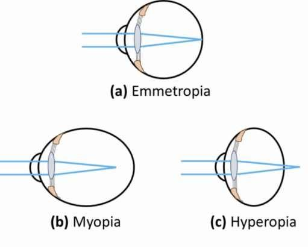

Refraction · Emmetropia & Ametropia
Emmetropia & Ametropia
Emmetropia
It is the condition of refraction of the eye in which with accommodation completely relaxed, parallel rays come to a focus on the retina.
Ametropia
It is the condition of refraction of the eye in which with accommodation completely relaxed, parallel rays do not come to a focus on the retina.
Types:
- Myopia.
- Hypermetropia.
- Astigmatism.
- Anisometropia.
- Aphakia.
